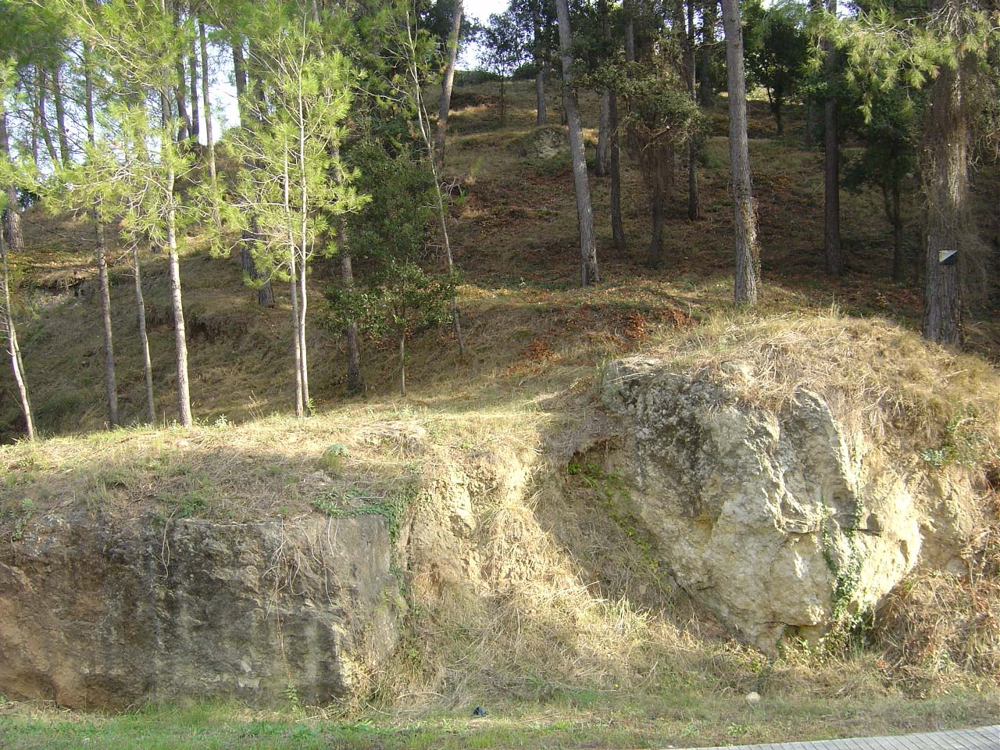
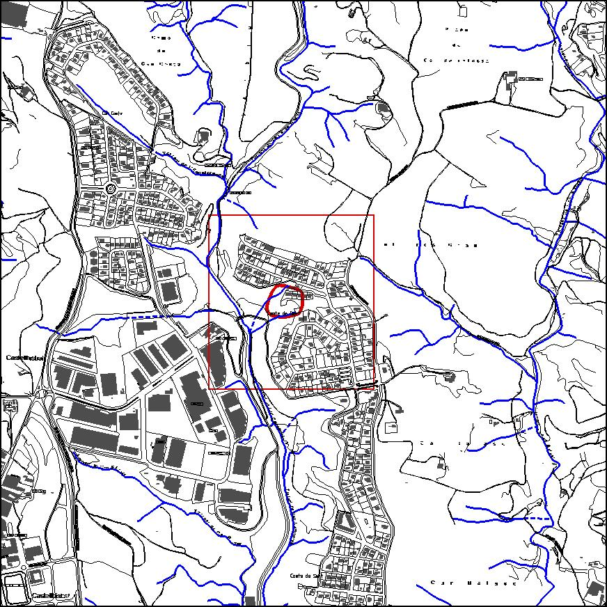

|  |  |
Nom de l’element: Pedrera de Can Campanyà
Clau d’identificació: D.09
Nucli o indret: Torrent de Can Campanyà.
UTM: X= 415.943, Y= 4.593.161
Règim del sòl: sòl urbà.
Característiques:
Pedrera explotada durant uns 2.000 anys, des de l’època romana fins a principis del segle XX. Amb el seu material calcari, s’han construït diversos edificis del terme municipal.
1.2. Estat de conservació:
Molt bo.
1.3. Ús actual:
Ecològic (acull una comunitat forestal) i de patrimoni històric i arqueològic.
1.4. Accés:
Accés fàcil des de la carretera que va des del PI. Compte de Sert al barri de Compte de Sert.
Es tracta d’una pedrera d’època romana que compta amb un bon estat de conservació, de manera que aporta informació històrica de les tècniques d’explotació que duien a terme.
3.1. Usos admesos:
Espais lliures, recreatiu cultural.
3.2. Condicions d’ordenació:
Segons Pla Especial a redactar.
3.3. Accés
Des de la carretera que va des del PI. Compte de Sert al barri de Compte de Sert.
BPU (Bé Protegit Urbanísticament)